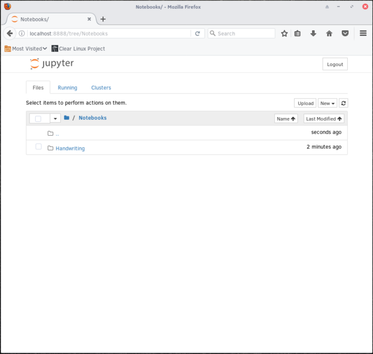

TensorFlow* machine learning on Clear Linux* OS
This tutorial will demonstrate the installation and execusion of a TensorFlow* machine learning example on Clear Linux* OS. It uses a Jupyter* Notebook and MNIST data for handwriting recognition.
The initial steps will have you set up a Jupyter kernel and run a Notebook on a bare-metal Clear Linux OS system.
Prerequisites
This tutorial assumes you have installed Clear Linux OS on your host system. For detailed instructions on installing Clear Linux OS on a bare metal system, follow the bare metal installation tutorial.
Before you install any new packages, update Clear Linux OS with the following command:
sudo swupd update
Once your system is updated, add the following bundles to your system:
- machine-learning-web-ui: This bundle contains the Jupyter application.
- machine-learning-basic: This bundle contains TensorFlow and other useful tools.
To install the bundles, run the following commands in your $HOME
directory:
sudo swupd bundle-add machine-learning-web-ui
sudo swupd bundle-add machine-learning-basic
Set up a Jupyter notebook
With all required packages and libraries installed, set up the file structure for the Jupyter Notebook.
In the
$HOMEdirectory, create a directory for the Jupyter Notebooks namedNotebooks.mkdir Notebooks
Within
Notebooks, create a directory namedHandwriting.mkdir Notebooks/Handwriting
Change to the new directory.
cd Notebooks/HandwritingCopy the
MNIST_example.ipynbfile into theHandwritingdirectory.注解
After installing the machine-learning basic bundle, you can find the example code under
/usr/share/doc/tensorflow/MNIST_example.ipynb.
The example code downloads and decompresses the MNIST data directly into the
./mnist directory. Alternatively, download the four files directly
from the Yann LeCun’s MNIST Database website and save them into a
mnist directory within the Handwriting directory.
The files needed are:
- train-images-idx3-ubyte.gz: Training set images (9912422 bytes)
- train-labels-idx1-ubyte.gz: Training set labels (28881 bytes)
- t10k-images-idx3-ubyte.gz: Test set images (1648877 bytes)
- t10k-labels-idx1-ubyte.gz: Test set labels (4542 bytes)
Run the Jupyter machine learning example code
With Clear Linux OS, Jupyter, and TensorFlow installed and configured, we can run the example code.
Go to the
($HOME)/Notebooksdirectory and start Jupyter with the following commands:cd ~/Notebooks jupyter notebookThe Jupyter server starts and opens a web browser showing the Jupyter file manager with a list of files in the current directory, see figure 1.
Figure 1: The Jupyter file manager shows the list of available files.
Click on the
Handwritingdirectory. TheMNIST_example.ipynbfile created earlier should be listed there, see figure 2.
Figure 2: The example file within the Jupyter file manager.
To run the hand writing example, click on the
MNIST_example.ipynbfile to load the notebook, see figure 3.
Figure 3: The loaded MNIST_example notebook within the Jupyter file manager.
Click the button to execute the code in the current cell and move to the next.
Select the In [2] cell and click the button to load the MNIST data. The successful output is shown on figure 4.

Figure 4: Output after successfully importing the MNIST data.
After the MNIST data was successfully downloaded and extracted into the
mnistdirectory within the($HOME)/Notebooks/Handwritingdirectory, four .gz files are present and the four data sets were created: trainX, trainY, testX and testY.To inspect the imported data, the function in In [3] first instructs Jupyter to reshape the data into an array of 28 x 28 images and to plot the area in a 28 x 28 grid. Click the button twice to show the first two digits in the trainX dataset, see figure 5.
Figure 5: A function reshapes the data and displays the first two digits in the trainX dataset.
The In [4] cell defines the neural network. It provides the inputs, defines the hidden layers, runs the training model, and sets up the output layer, see figure 6. Click the button four times to perform these operations.

Figure 6: Defining, building and training the neural network model.
To test the accuracy of the prediction the system makes, select the In [8] cell and click the button. In this example, the number 6 was predicted with a 99% accuracy, see figure 7.

Figure 7: The system predicts a number providing the accuracy of the prediction.
注解
To retest the accuracy of a random data point’s prediction, run the cell In [8] again. It will take another random data point and predict its value.
To check the accuracy for the whole dataset, select the In [10] cell and click the button. Our example’s accuracy is calculated as 97.17%, see figure 8.
Figure 8: The system’s accuracy for the entire data set.
For more in-depth information on the model used and the mathematics it entails, visit the TensorFlow tutorials TensorFlow MNIST beginners demo and TensorFlow MNIST pros demo.
Congratulations!
You have successfully installed a Jupyter kernel on Clear Linux OS. In addition, you trained a neural network to successfully predict the values contained in a data set of hand-written number images.